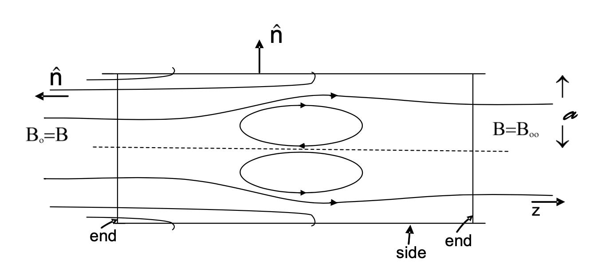
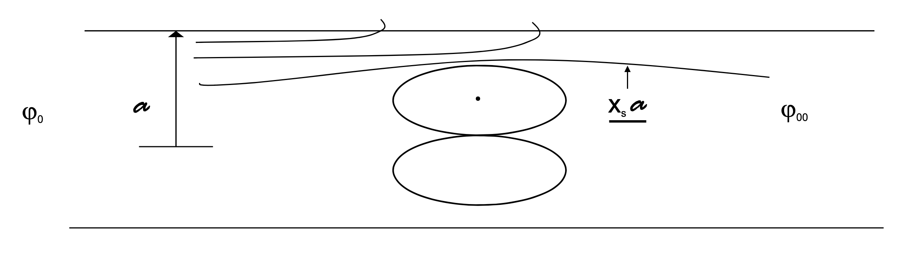

10.2 Review of E&M
Homework group: just me n leek42@uw.edu
Realistically, all of the E&M review comes from https://peppyhare.github.io/griffiths-em/
10.1.1 Maxwell Stress Tensor
The Maxwell stress tensor encompasses the way that electromagnetic fields an exert forces/stresses in 3D space:
The basic force laws of E&M are On an element of volume, the change in momentum is The maxwell equations give the source terms as
Using the chain rule and
From Faraday,
Finally we've got everything in place to use the identity
All together,
Integrating over a volume,
To simplify, we use another identity
And the same is true for . The momentum change expression is simplified if we define the Maxwell stress tensor as
That lets us re-cast the momentum change in a volume as a stress tensor on a surface
Example: Application to FRC (Field-Reversed Configuration)
In a FRC confinement experiment, a bias field is applied and quickly reversed, resulting in poloidal fields opposite the bias current.

If we want to confine a plasma in the center of the FRC, we want to calculate the force on our plasma (electron fluid).
At the left end of the configuration where we have and we define
Now what about at the sides? There, and
The total force is the sum
By symmetry, the components add to zero

The magnetic flux at the open ends must go somewhere
Assume is constant (or that it is an appropriate average value)
Where is the cross-sectional area of the FRC. So, in the simple picture the force is the same as the initial flux, reduced by an equivalent area of the FRC torus.